SHALLOW WATER MITGCM VERIFICATION CASES
Verification homepage for the shallow-water MITgcm experiments. Use the clickable section cards below to jump to each experiment and inspect its current results.
Gaussian Patch Free Surface Initialization with Constant Bathymetry
Prognostic
Diagnostic
Gaussian Patch Free Surface Initialization with Real Bathymetry
Prognostic
Diagnostic
Geostrophic Free Surface Initialization with Real Bathymetry
Prognostic
Diagnostic
Advection of Cosine Bell
Numerical Settings
| rhoConst | gravity | deltaT | nTimeSteps | dumpFreq | monitorFreq | delR |
|---|---|---|---|---|---|---|
| 1000. | 9.81 | 1.0 | 1036800 | 86400. | 86400. | 4000. |
Grid And MPI Layout
| sNx | sNy | nPx | nPy | Nx | Ny | mpi_ranks |
|---|---|---|---|---|---|---|
| 180 | 360 | 8 | 2 | 1440 | 720 | 16 |
Passive Tracer Snapshots

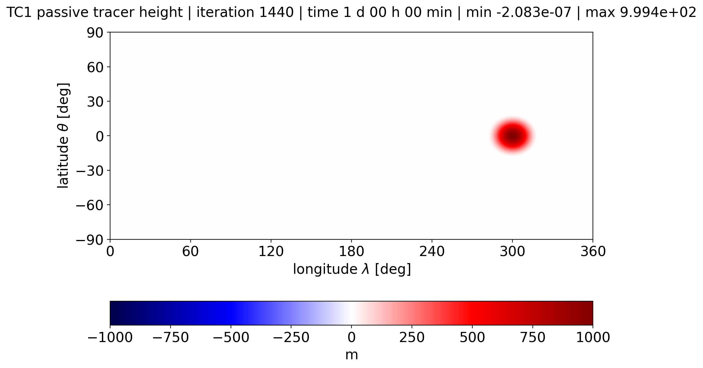
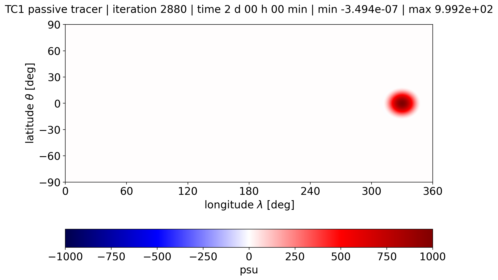

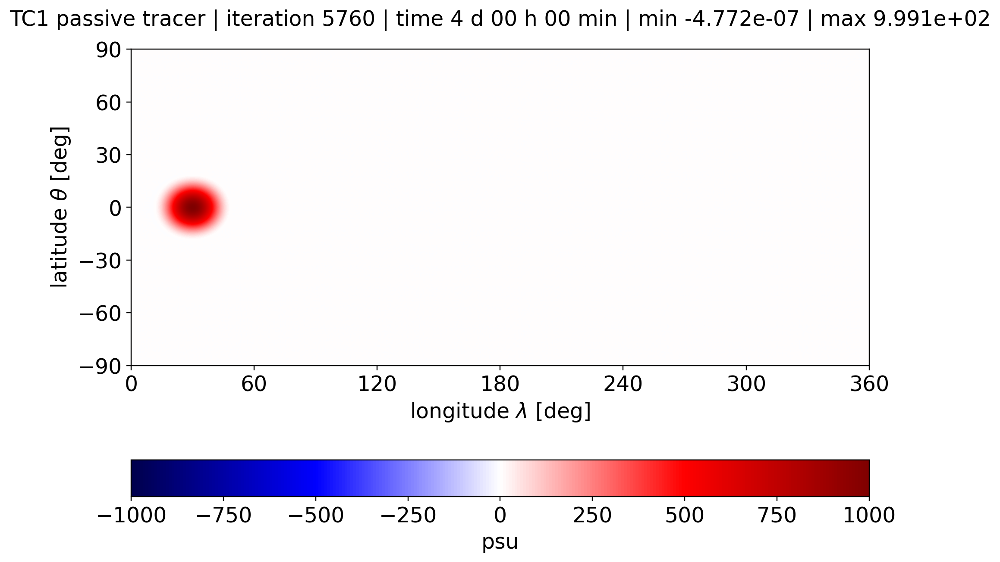
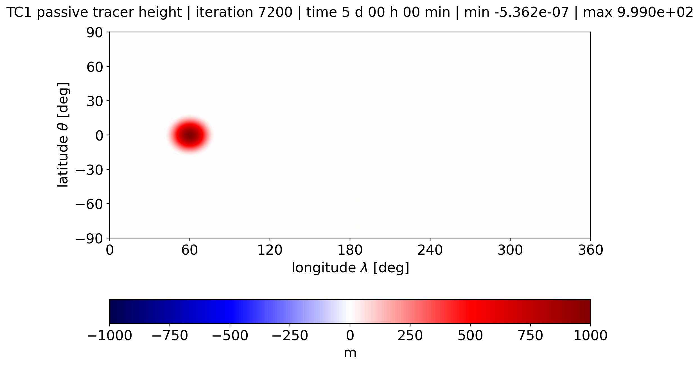

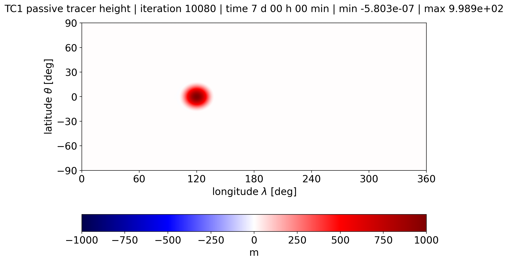
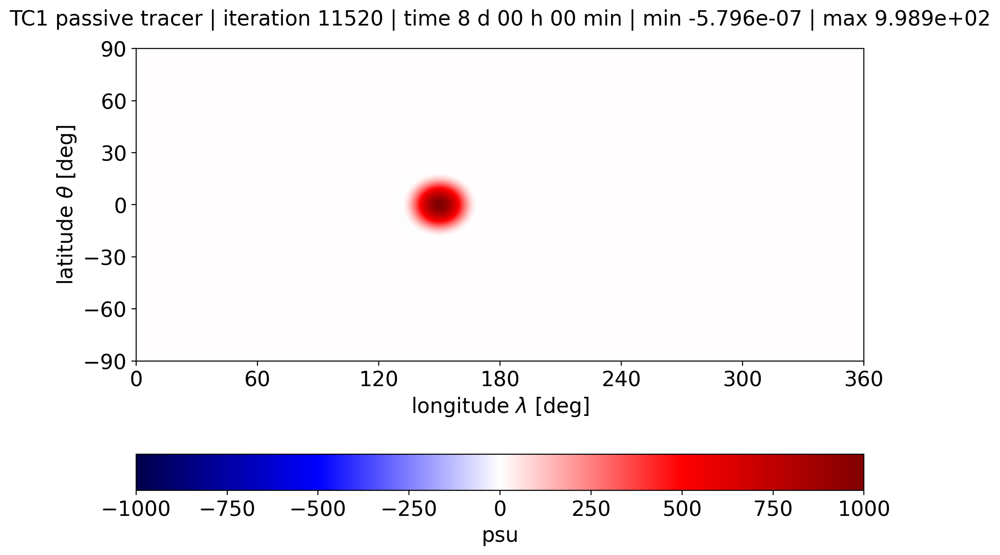


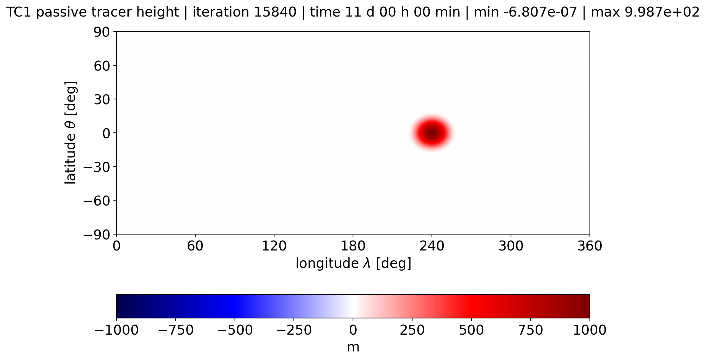

Passive Tracer Overlay Comparisons


Error Contours


Global Steady-State Nonlinear Zonal Geostrophic Flow
Numerical Settings
| rhoConst | gravity | deltaT | nTimeSteps | dumpFreq | monitorFreq | delR |
|---|---|---|---|---|---|---|
| 1. | 9.81 | 60. | 17280 | 86400. | 86400. | 2996.9418960244646 |
Grid And MPI Layout
| sNx | sNy | nPx | nPy | Nx | Ny | mpi_ranks |
|---|---|---|---|---|---|---|
| 120 | 180 | 12 | 4 | 1440 | 720 | 48 |
Eta Snapshots
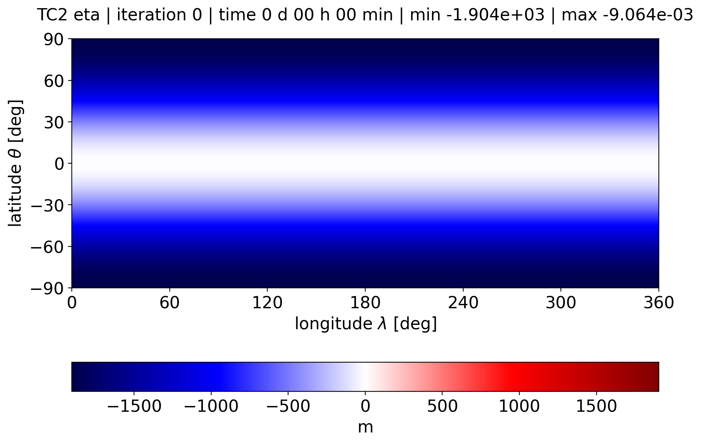
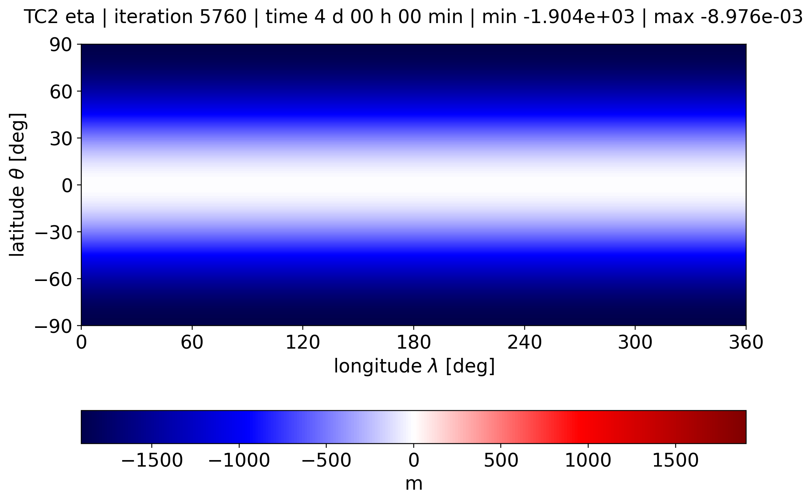
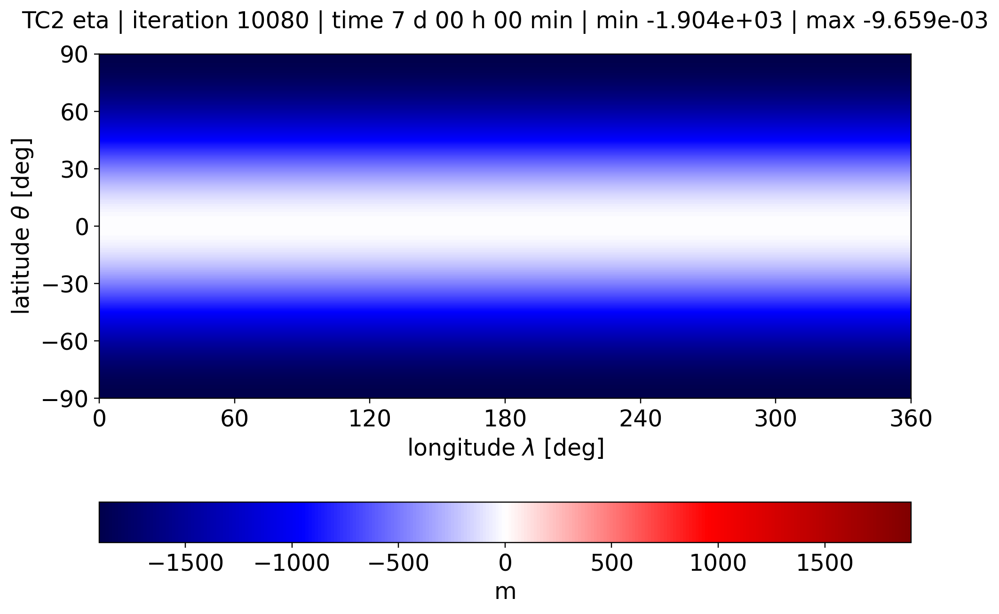
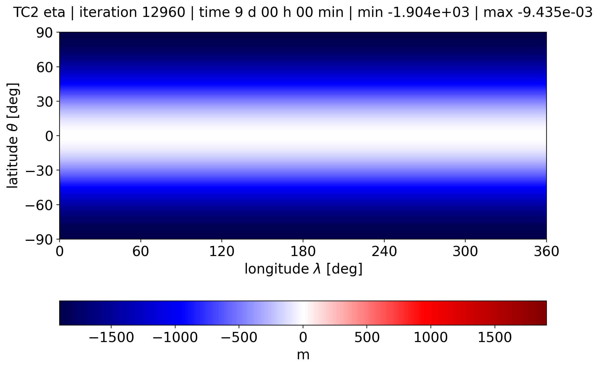
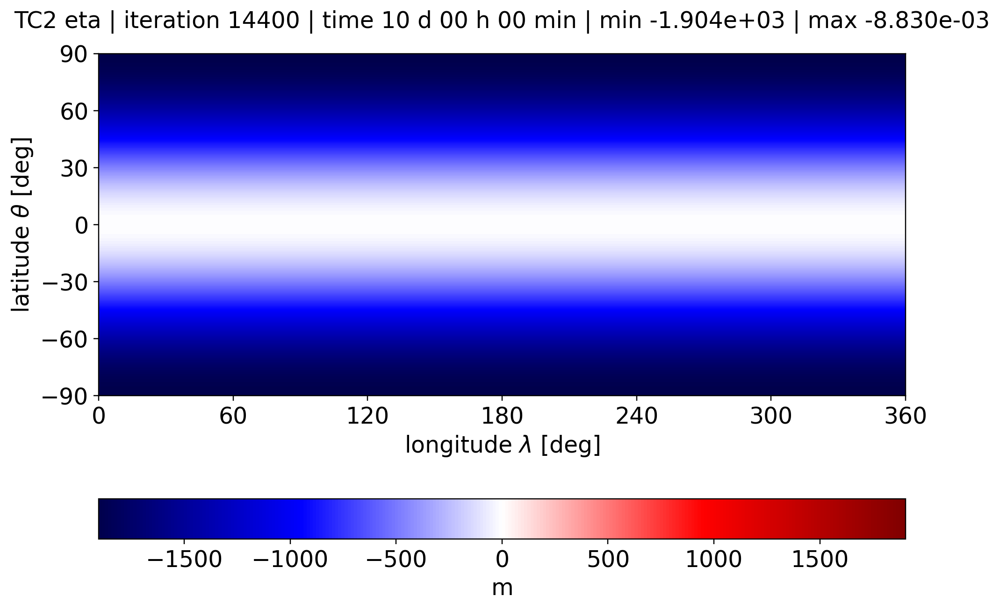
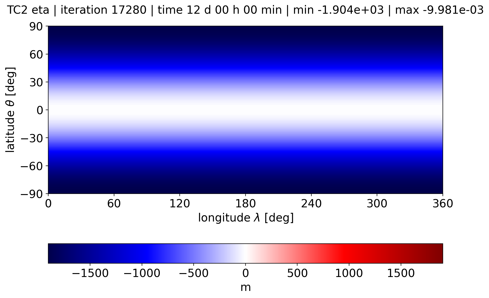
Steady-State Error Norms

Steady Geostrophic Flow with Compact Support
Numerical Settings
| rhoConst | gravity | deltaT | nTimeSteps | dumpFreq | monitorFreq | delR |
|---|---|---|---|---|---|---|
| 1000. | 9.80616 | 60. | 17280 | 86400. | 86400. | 4000.0 |
Grid And MPI Layout
| sNx | sNy | nPx | nPy | Nx | Ny | mpi_ranks |
|---|---|---|---|---|---|---|
| 360 | 180 | 4 | 4 | 1440 | 720 | 16 |
No media linked yet for this section.